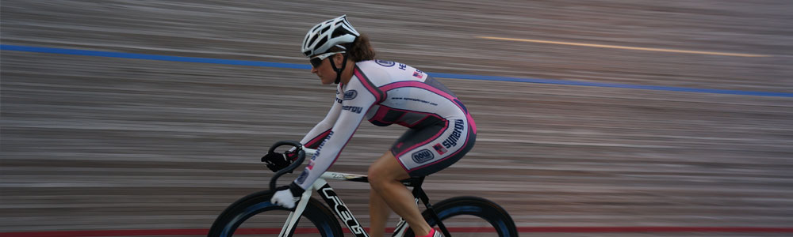
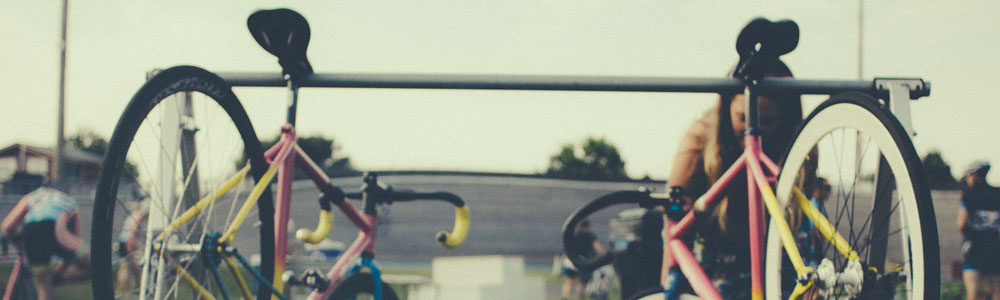
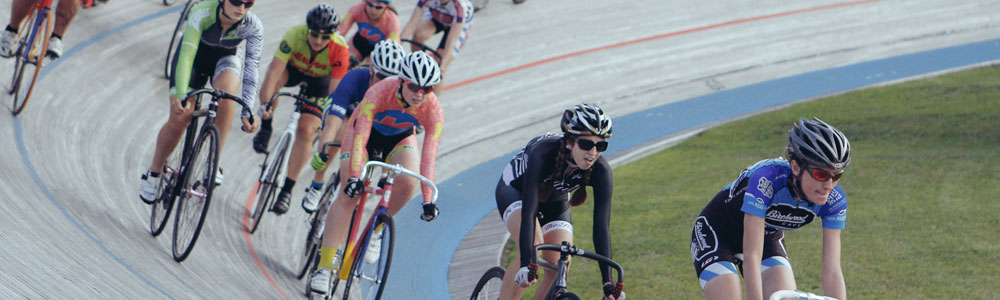
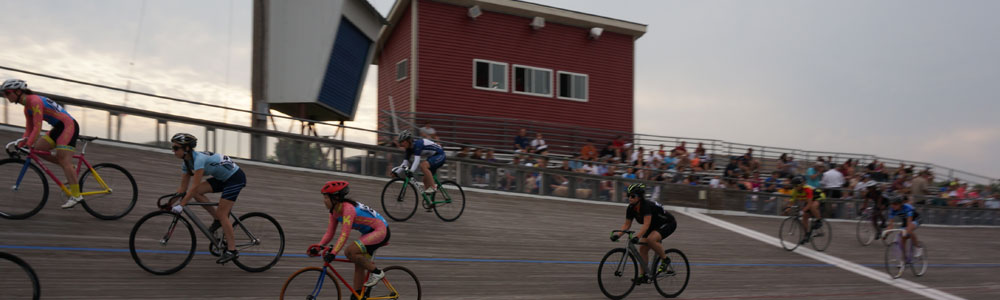

- 
- 
-

- 
- 
The National Sports Center Velodrome - the only velodrome in Minnesota and a unique part of the USA’s small portfolio of velodromes - needs major repairs immediately. The track is currently closed until it can be repaired. These repairs will extend the life of the facility, keeping the track cycling community active until a new, future velodrome facility is completed. We are asking the broad track cycling community to help out.
Friends of Velodrome Racing in Minnesota – a newly-formed, volunteer-run nonprofit organization - is working to raise money to fund a repair that will cost about $60,000.
The NSC Velodrome is owned and operated by the National Sports Center Foundation, a nonprofit organization that administers a large complex of state-developed sports facilities. Given the age of the velodrome, the NSCF was prepared to close the facility permanently, but Friends of Velodrome Racing in MN has worked with the NSCF Board of Directors on a plan to preserve our unique public cycling facility.
friendsofmnvelo@gmail.com
How You Can Help
- Like us on Facebook to stay abreast of current news and events.
- Attend parties and fundraisers.
- If you can’t attend fundraisers, donate through GoFundMe or Paypal.
- Show up to ride and race next season, and purchase a season pass.